Classificação dos materiais quanto à condução de corrente elétrica
Introdução
Prof. Alcemy Severino
IFRN
Objetivos da aula
- Entender o arranjo molecular e a condução.
- Diferenciar condutores, isolantes (dielétricos) e semicondutores.
- Identificar componentes de controle (resistores) e carga.
O Mundo Microscópico e a Condução
Arranjos Moleculares
- A facilidade com que a eletricidade passa depende do estado da matéria:
- Sólidos: Átomos compactos; alguns permitem o “salto” de elétrons.
- Líquidos: Podem conduzir se houver íons (como água salgada).
- Gases: Geralmente isolantes devido à distância entre átomos, a menos que ionizados.
Arranjos Moleculares
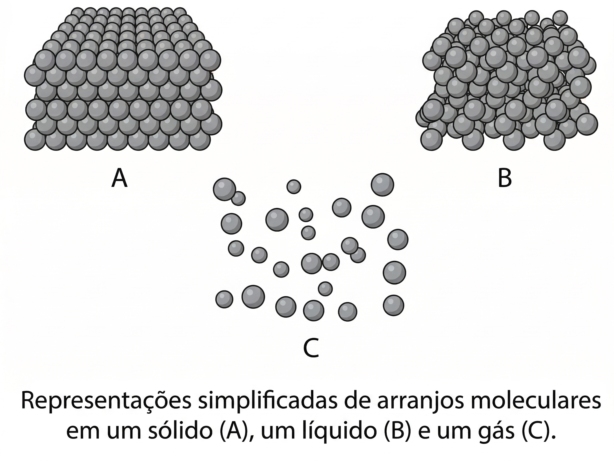
Condutores: o salto do elétron
- Em um condutor, os elétrons “pulam” de átomo em átomo.
- Esse movimento ocorre do local com carga negativa para o positivo.
- Destaque: Prata pura é o melhor condutor à temperatura ambiente.
Condutores: o salto do elétron
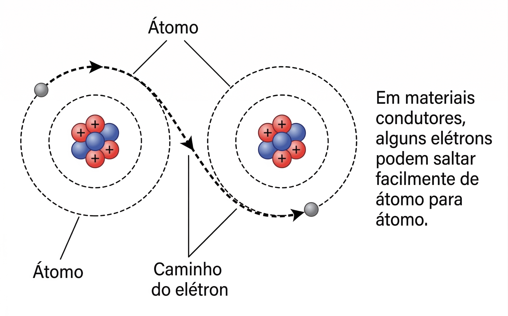
Condutores no Dia a Dia
- Cobre e Alumínio: Os mais comuns em fiações elétricas.
- Mercúrio: Um exemplo de metal líquido que conduz eletricidade.
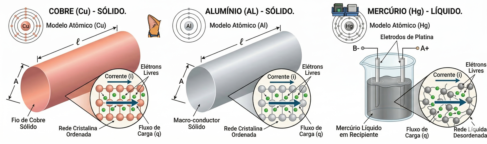
Por que o cobre é o mais usado?
- Custo-benefício: embora a prata seja melhor condutora, seu preço inviabiliza aplicações em larga escala.
- Durabilidade: o cobre resiste bem à oxidação e mantém desempenho estável.
- Disponibilidade: é abundante e fácil de extrair/refinar.
- Segurança: suporta altas correntes sem aquecer excessivamente.
Aplicações práticas
- Prata: usada em contatos elétricos de alta precisão (relés, conectores especiais).
- Cobre: padrão em cabos residenciais, industriais e eletrônicos.
- Alumínio: preferido em linhas de transmissão de energia por ser leve e reduzir custos estruturais.
- Ouro: empregado em componentes eletrônicos de alta confiabilidade (chips, conectores) devido à resistência à corrosão.
Isolantes
- Definição: Material que resiste ao fluxo de elétrons, não permitindo a condução de corrente elétrica.
- Exemplos: Borracha, vidro, porcelana, plásticos.
- Função principal: Garantir segurança elétrica, evitando choques e curto-circuitos.
- Origem do nome: “Isolar” significa separar ou impedir contato — no caso, impedir a passagem da eletricidade.
Dielétricos
- Definição: Um isolante que pode ser polarizado quando submetido a um campo elétrico.
- Propriedade chave: As cargas internas se deslocam levemente em direções opostas, criando dipolos elétricos.
- Função principal: Armazenar energia elétrica em dispositivos como capacitores.
Dielétricos
- Exemplos: Ar, papel, mica, cerâmica, óxidos metálicos.
- Origem do nome: O termo “dielétrico” vem do grego dia (através) + eléktron (âmbar, relacionado à eletricidade), indicando que o campo elétrico atravessa o material sem que haja condução de corrente.
Por que diferenciar?
- Todo dielétrico é um isolante, mas nem todo isolante é um dielétrico.
- A diferença está na capacidade de polarização: isolantes comuns apenas bloqueiam corrente, enquanto dielétricos também interagem com o campo elétrico.
- Essa distinção é crucial em eletrônica e engenharia elétrica, especialmente no projeto de capacitores e sistemas de alta tensão.
Isolantes/Dielétricos
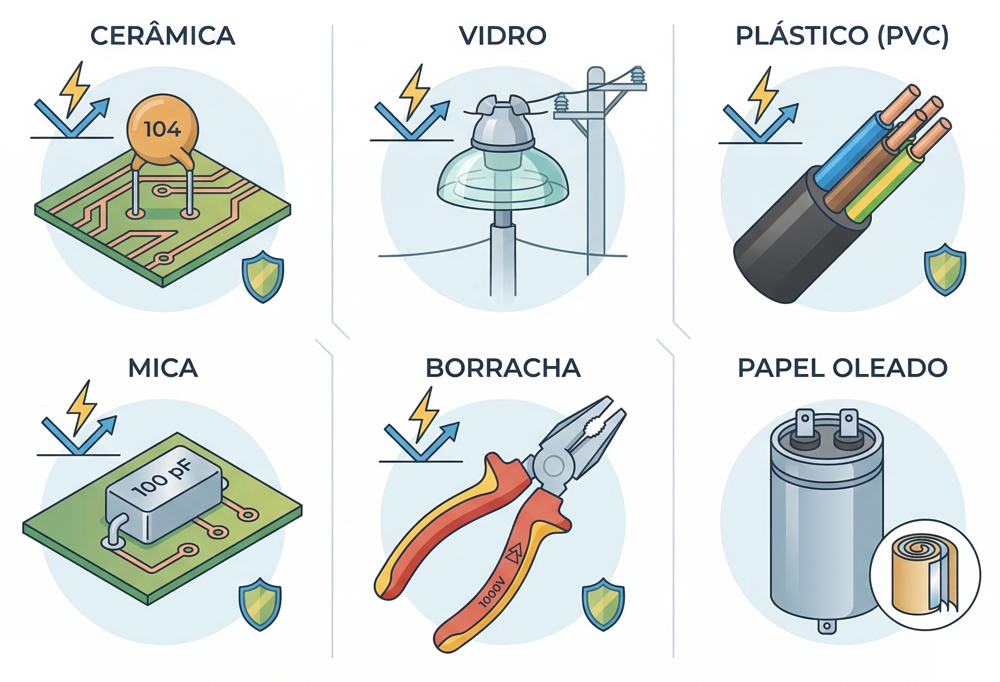
Falha do Isolante
- Se a força elétrica for extrema, qualquer isolante pode falhar.
- O material pode carbonizar, derreter ou ser perfurado por uma centelha.
- Quando isso ocorre, ele perde sua propriedade e deixa a corrente passar.
Falha do Isolante
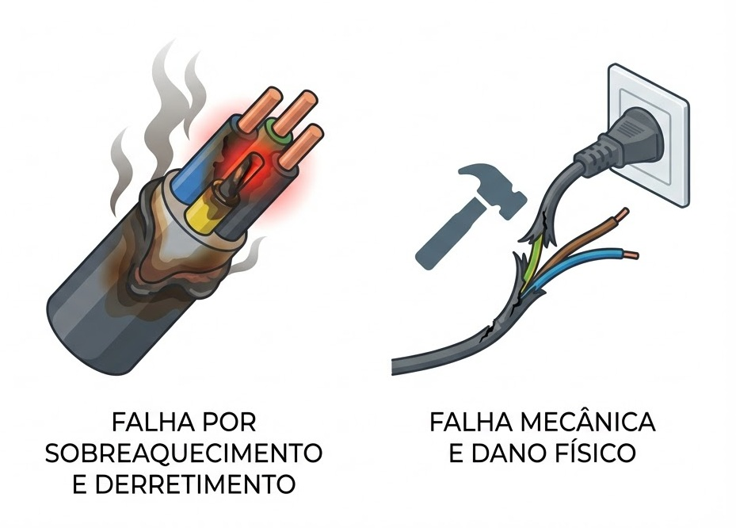
Onde Vemos Isolantes?
- Nas linhas de transmissão de alta voltagem (porcelana ou vidro).
- Evitam curto-circuitos com torres de metal ou postes de madeira úmidos.
Semicondutores: o cérebro da Informática
Semicondutores
- Conduzem facilmente sob certas condições e com dificuldade em outras.
- São quimicamente “dopados” (adição de impurezas como índio ou antimônio) para controlar sua condutividade.
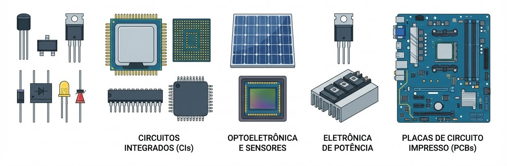
O Conceito de Lacuna
- Além do movimento de elétrons, falamos do movimento de lacunas.
- Lacuna: É a falta de um elétron onde ele deveria estar.
- Elas viajam no sentido oposto ao dos elétrons.
Materiais Tipo-N e Tipo-P
- Tipo-N: Elétrons são a maioria das cargas.
- Tipo-P: Lacunas são as cargas majoritárias.
- Exemplos: Silício, Selênio e Arsenieto de Gálio.
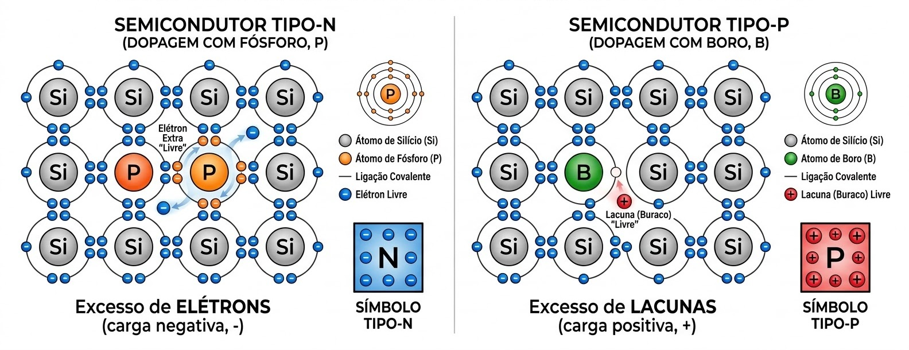
Controle e Cargas
Resistores: Controlando o Fluxo
- Componentes fabricados com o intuito específico de limitar a corrente.
- Feitos de materiais como pasta de carbono e argila.
- Regra: Quanto maior a condutividade, menor a resistência (e vice-versa).
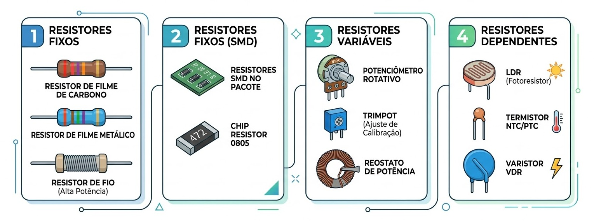
Fontes e Geradores
- Transformam outras formas de energia (química, mecânica) em energia elétrica.
- Fornecem a “pressão” para o movimento das cargas.
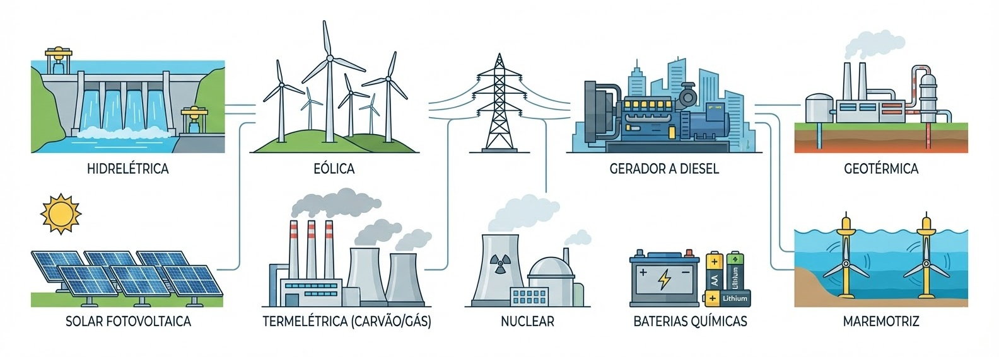
Cargas Térmicas: aquecedores
- Transformam eletricidade em calor por meio da resistência.
- Exemplos: Chuveiros e aquecedores de utilidade (que puxam de 10A a 12A).
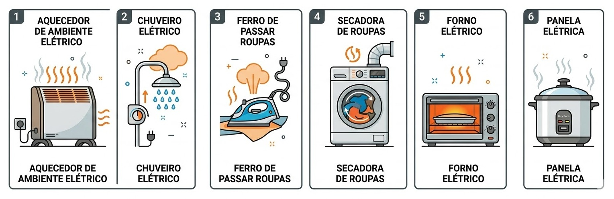
Cargas Mecânicas: motores
- Transformam eletricidade em movimento por campos magnéticos.
- Exemplos: Ventiladores e motores de indução.
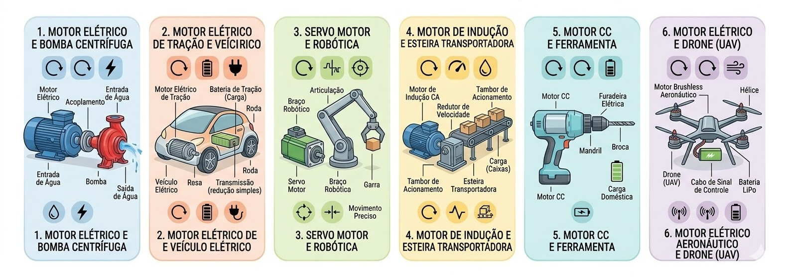
Cargas Luminosas: lâmpadas
- Transformam eletricidade em luz.
- Uma lâmpada de 60W consome cerca de 0,5A de corrente.
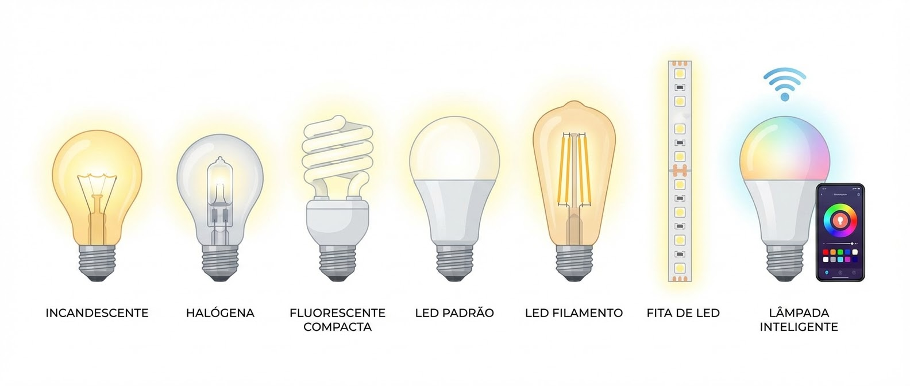
Tabela Resumo Final
| Material | Exemplo | Papel no Circuito |
|---|---|---|
| Condutor | Cobre, Prata | Caminho livre para cargas. |
| Isolante | Vidro, Plástico | Proteção e separação. |
| Semicondutor | Silício | Controle inteligente (Chave). |
| Resistor | Carbono | Limita a corrente. |
Este material foi produzido pelo Prof. Alcemy Gabriel para uso educacional.
Licença de Uso (CC BY-NC 4.0)
Você tem o direito de:
- Compartilhar: copiar e redistribuir o material.
- Adaptar: remixar, transformar e criar a partir do material.
Sob as seguintes condições:
- Atribuição: Você deve dar o crédito apropriado ao autor.
- Não Comercial: Você não pode usar o material para fins comerciais.

Para uso comercial ou outras finalidades não listadas, entre em contato para solicitar autorização.

Eletricidade Instrumental